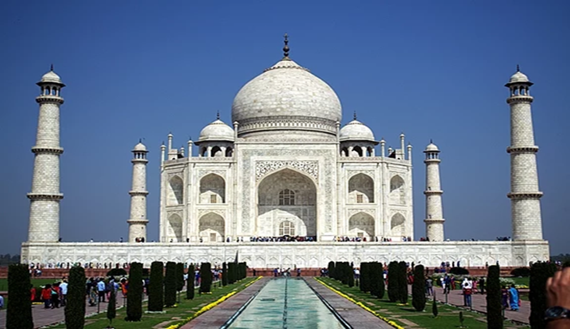

Uttar Pradesh
This article is about Uttar Pradesh.
Uttar Pradesh is a state in northern India. With over 241 million inhabitants, it is the most populated state in India as well as the most populous country subdivision in the world – more populous than all but four other countries outside of India[14] – and accounting for 16.5 per cent of the total population of India. The state is bordered by Rajasthan to the west, Haryana, Himachal Pradesh and Delhi to the northwest, Uttarakhand and Nepal to the north, Bihar to the east, Madhya Pradesh, Chhattisgarh and Jharkhand to the south. It is the fourth-largest Indian state by area covering 243,286 km2 (93,933 sq mi), equal to 7.3 per cent of the total area of India. Lucknow serves as the state capital, with Prayagraj being the judicial capital. It is divided into 18 divisions and 75 districts. On 9 November 2000, a new state, Uttaranchal (now Uttarakhand), was created from Uttar Pradesh's western Himalayan hill region. The two major rivers of the state, the Ganges and its tributary Yamuna, meet at the Triveni Sangam in Prayagraj, a Hindu pilgrimage site. Other notable rivers are Gomti and Saryu. The forest cover in the state is 6.1 per cent of the state's geographical area. The cultivable area is 82 per cent of the total geographical area, and the net area sown is 68.5 per cent of the cultivable area.[15]
Uttar Pradesh was established in 1950 after India had become a republic. It is a successor to the United Provinces, established in 1935 by renaming the United Provinces of Agra and Oudh, in turn established in 1902 from the North-Western Provinces and the Oudh Province. Though long known for sugar production, the state's economy is now dominated by the services industry. The service sector comprises travel and tourism, hotel industry, real estate, insurance and financial consultancies. The economy of Uttar Pradesh is the third-largest state economy in India, with ₹18.63 lakh crore (US$230 billion) in gross domestic product and a per capita GSDP of ₹68,810 (US$860).[9] The High Court of the state is located in Prayagraj. The state contributes 80 seats and 31 seats to the lower house Lok Sabha and the upper house Rajya Sabha, respectively.
Inhabitants of the state are called Awadhi, Bagheli, Bhojpuriya, Braji, Bundeli, Kannauji or Rohilkhandi depending upon their region of origin. Hinduism is practised by more than three-fourths of the population, with Islam being the next-largest religious group. Hindi is the most widely spoken language and is also the official language of the state, along with Urdu. Uttar Pradesh was home to most of the mainstream political entities that existed in ancient and medieval India including the Maurya Empire, Harsha Empire, Gupta Empire, Pala Empire, Delhi Sultanate and Mughal Empire as well as many other empires. At the time of the Indian independence movement in the early 20th century, there were three major princely states in Uttar Pradesh – Ramgadi, Rampur and Benares. The state houses several holy Hindu temples and pilgrimage centres. Along with several historical, natural and religious tourist destinations, including Agra, Aligarh, Ayodhya, Bareilly, Gorakhpur, Kanpur, Kushinagar, Lucknow, Mathura, Meerut, Prayagraj, Varanasi, and Vrindavan, Uttar Pradesh is also home to three World Heritage sites.
History
Modern human hunter-gatherers have been in Uttar Pradesh[16][17][18] since between around[19] 85,000 and 72,000 years ago. There have also been prehistorical finds in the state from the Middle and Upper Paleolithic dated to 21,000–31,000 years old[20] and Mesolithic/Microlithic hunter-gatherer settlement, near Pratapgarh, from around 10550–9550 BCE. Villages with domesticated cattle, sheep, and goats and evidence of agriculture began as early as 6000 BCE, and gradually developed between c. 4000 and 1500 BCE beginning with the Indus Valley Civilisation and Harappa culture to the Vedic period and extending into the Iron Age.[21][22][23]
Out of the sixteen mahajanapadas (lit. 'great realms') or oligarchic republics that existed in ancient India, seven fell entirely within the present-day boundaries of the state.[24] The kingdom of Kosala, in the Mahajanapada era, was also located within the regional boundaries of modern-day Uttar Pradesh.[25] According to Hinduism, the divine King Rama of the Ramayana epic reigned in Ayodhya, the capital of Kosala.[26] Krishna, another divine king of Hindu legend, who plays a key role in the Mahabharata epic and is revered as the eighth reincarnation (Avatar) of the Hindu god Vishnu, is said to have been born in the city of Mathura.[25] The aftermath of the Kurukshetra War is believed to have taken place in the area between the Upper Doab and Delhi, (in what was Kuru Mahajanapada), during the reign of the Pandava King Yudhishthira. The kingdom of the Kurus corresponds to the Black and Red Ware and Painted Gray Ware culture and the beginning of the Iron Age in northwest India, around 1000 BCE.[25]
Control over Gangetic plains region was of vital importance to the power and stability of all of India's major empires, including the Maurya (320–200 BCE), Kushan (100–250 CE), Gupta (350–600), and Gurjara-Pratihara (650–1036) empires.[27] Following the Huns' invasions that broke the Gupta empire, the Ganges-Yamuna Doab saw the rise of Kannauj.[28] During the reign of Harshavardhana (590–647), the Kannauj empire reached its zenith.[28] It spanned from Punjab in the north and Gujarat in the west to Bengal in the east and Odisha in the south.[25] It included parts of central India, north of the Narmada River and it encompassed the entire Indo-Gangetic Plain.[29] Many communities in various parts of India claim descent from the migrants of Kannauj.[30] Soon after Harshavardhana's death, his empire disintegrated into many kingdoms, which were invaded and ruled by the Gurjara-Pratihara empire, which challenged Bengal's Pala Empire for control of the region.[29] Kannauj was several times invaded by the South Indian Rashtrakuta dynasty, from the 8th century to the 10th century.[31][32] After the fall of the Pala empire, the Chero dynasty ruled from the 12th century to the 18th century.[33]
Uttar Pradesh was partially or entirely ruled by the Delhi Sultanate for 320 years (1206–1526). Five dynasties ruled over the Delhi Sultanate sequentially: the Mamluk dynasty (1206–90), the Khalji dynasty (1290–1320), the Tughlaq dynasty (1320–1414), the Sayyid dynasty (1414–51), and the Lodi dynasty (1451–1526).[34][35]
The first Sultan of Delhi, Qutb ud-Din Aibak, conquered some parts of Uttar Pradesh, including Meerut, Aligarh, and Etawah. His successor, Iltutmish, expanded the Sultanate's rule over Uttar Pradesh by defeating the King of Kannauj. During the reign of Sultan Balban, the Mamluk dynasty faced numerous rebellions in the state, but he was able to suppress them and establish his authority. Alauddin Khilji, extended his conquests to various regions in the state, including Varanasi and Prayagraj. Apart from the rulers, the Delhi Sultanate era also saw the growth of Sufism in Uttar Pradesh. Sufi saints, such as Nizamuddin Auliya and Qutbuddin Bakhtiar Kaki, lived during this period and their teachings had a significant impact on the people of the region. Sultanat era in the state also witnessed the construction of mosques and tombs, including the Atala Masjid in Jaunpur, the Jama Masjid in Fatehpur Sikri, and the Ghiyath al-Din Tughluq's Tomb in Tughlaqabad.
In the 16th century, Babur, a Timurid descendant of Timur and Genghis Khan from Fergana Valley (modern-day Uzbekistan), swept across the Khyber Pass and founded the Mughal Empire, covering India, along with modern-day Afghanistan, Pakistan and Bangladesh.[36] The Mughals were descended from Persianised Central Asian Turks (with significant Mongol admixture). In the Mughal era, Uttar Pradesh became the heartland of the empire.[30] Mughal emperors Babur and Humayun ruled from Delhi.[37][38] In 1540 an Afghan, Sher Shah Suri, took over the reins of Uttar Pradesh after defeating the Mughal King Humanyun.[39] Sher Shah and his son Islam Shah ruled Uttar Pradesh from their capital at Gwalior.[40] After the death of Islam Shah Suri, his prime minister Hemu became the de facto ruler of Uttar Pradesh, Bihar, Madhya Pradesh, and the western parts of Bengal. He was bestowed the title of Hemchandra Vikramaditya (title of Vikramāditya adopted from Vedic period) at his formal coronation took place at Purana Qila in Delhi on 7 October 1556. A month later, Hemu died in the Second Battle of Panipat, and Uttar Pradesh came under Emperor Akbar's rule.[41] Akbar ruled from Agra and Fatehpur Sikri.[42]
In the 18th century, after the fall of Mughal authority, the power vacuum was filled by the Maratha Empire, in the mid-18th century, the Maratha army invaded the Uttar Pradesh region, which resulted in Rohillas losing control of Rohilkhand to the Maratha forces led by Raghunath Rao and Malha Rao Holkar. The conflict between Rohillas and Marathas came to an end on 18 December 1788 with the arrest of Ghulam Qadir, the grandson of Najeeb-ud-Daula, who was defeated by the Maratha general Mahadaji Scindia. In 1803–04, following the Second Anglo-Maratha War, when the British East India Company defeated the Maratha Empire, much of the region came under British suzerainty.[43]
Starting from Bengal in the second half of the 18th century, a series of battles for north Indian lands finally gave the British East India Company accession over the state's territories.[45] Ajmer and Jaipur kingdoms were also included in this northern territory, which was named the "North-Western Provinces" (of Agra). Although UP later became the fifth-largest state of India, NWPA was one of the smallest states of the British Indian empire.[46] Its capital shifted twice between Agra and Allahabad.[47]
Due to dissatisfaction with British rule, a serious rebellion erupted in various parts of North India, which became known as the Indian Rebellion of 1857; Bengal regiment's sepoy stationed at Meerut cantonment, Mangal Pandey, is widely considered as its starting point.[48] After the revolt failed, the British divided the most rebellious regions by reorganising their administrative boundaries, splitting the Delhi region from 'NWFP of Agra' and merging it with Punjab Province, while the Ajmer–Marwar region was merged with Rajputana and Oudh was incorporated into the state. The new state was called the North Western Provinces of Agra and Oudh, which in 1902 was renamed as the United Provinces of Agra and Oudh.[49] It was commonly referred to as the United Provinces or its acronym UP.[50][51]
In 1920, the capital of the province was shifted from Allahabad to Lucknow.[52] The high court continued to be at Allahabad, but a bench was established at Lucknow.[53] Allahabad continues to be an important administrative base of today's Uttar Pradesh and has several administrative headquarters.[54] Uttar Pradesh continued to be central to Indian politics and was especially important in modern Indian history as a hotbed of the Indian independence movement. The state hosted modern educational institutions such as the Aligarh Muslim University, Banaras Hindu University and Darul Uloom Deoband. Nationally known figures such as Ram Prasad Bismil and Chandra Shekhar Azad were among the leaders of the movement in Uttar Pradesh, and Motilal Nehru, Jawaharlal Nehru, Madan Mohan Malaviya and Govind Ballabh Pant were important national leaders of the Indian National Congress. The All India Kisan Sabha was formed at the Lucknow session of the Congress on 11 April 1936, with the famous nationalist Sahajanand Saraswati elected as its first president,[55] to address the longstanding grievances of the peasantry and mobilise them against the zamindari landlords attacks on their occupancy rights, thus sparking the Farmers movements in India.[56] During the Quit India Movement of 1942, Ballia district overthrew the colonial authority and installed an independent administration under Chittu Pandey. Ballia became known as "Baghi Ballia" (Rebel Ballia) for this significant role in India's independence movement.[57]
After India's independence, the United Provinces were renamed "Uttar Pradesh" (lit. 'northern province'), preserving UP as the acronym,[58][59] with the change coming into effect on 24 January 1950.[1] The new state was formed after the merger of several princely states and territories, including the United Provinces of Agra and Oudh, and the Delhi territory. The state has provided nine of India's prime ministers which is more than any other state and is the source of the largest number of seats in the Lok Sabha. Despite its political influence since ancient times, its poor record in economic development and administration, poor governance, organised crime and corruption have kept it among India's backward states. The state has been affected by repeated episodes of caste-related and communal violence.[60] In December 1992 the disputed Babri Mosque located in Ayodhya was demolished by Hindu activists, leading to widespread violence across India.[61] In 2000, northern districts of the state were separated to form the state of Uttarakhand.[62]
Geography
Uttar Pradesh, with a total area of 240,928 square kilometres (93,023 sq mi), is India's fourth-largest state in terms of land area and is roughly of same size as United Kingdom. It is situated on the northern spout of India and shares an international boundary with Nepal. The Himalayas border the state on the north,[63] but the plains that cover most of the state are distinctly different from those high mountains.[64] The larger Gangetic Plain region is in the north; it includes the Ganges-Yamuna Doab, the Ghaghra plains, the Ganges plains and the Terai.[65] The smaller Vindhya Range and plateau region are in the south.[66] It is characterised by hard rock strata and a varied topography of hills, plains, valleys and plateaus. The Bhabhar tract gives place to the terai area which is covered with tall elephant grass and thick forests interspersed with marshes and swamps.[67][68] The sluggish rivers of the bhabhar deepen in this area, their course running through a tangled mass of thick undergrowth. The terai runs parallel to the bhabhar in a thin strip. The entire alluvial plain is divided into three sub-regions.[69] The first in the eastern tract consisting of 14 districts which are subject to periodical floods and droughts and have been classified as scarcity areas. These districts have the highest density of population which gives the lowest per capita land. The other two regions, the central and the western, are comparatively better with a well-developed irrigation system.[70] They suffer from waterlogging and large-scale user tracts.[71] In addition, the area is fairly arid. The state has more than 32 large and small rivers; of them, the Ganga, Yamuna, Saraswati, Sarayu, Betwa, and Ghaghara are larger and of religious importance in Hinduism.[72]
Cultivation is intensive in the state.[73] Uttar Pradesh falls under three agro-climatic zones viz. Middle Gangetic Plains region (Zone–IV), Upper Gangetic Plains region (Zone–V) and Central Plateau and Hills region (Zone–VIII).[74] The valley areas have fertile and rich soil. There is intensive cultivation on terraced hill slopes, but irrigation facilities are deficient.[75] The Siwalik Range which forms the southern foothills of the Himalayas, slopes down into a boulder bed called 'bhabhar'.[76] The transitional belt running along the entire length of the state is called the terai and bhabhar area. It has rich forests, cutting across it are innumerable streams which swell into raging torrents during the monsoon.[77]
Climate
Uttar Pradesh has a humid subtropical climate and experiences four seasons.[78] The winter in January and February is followed by summer between March and May and the monsoon season between June and September.[79] Summers are extreme with temperatures fluctuating anywhere between 0–50 °C (32–122 °F) in parts of the state coupled with dry hot winds called the Loo.[80] The Gangetic plain varies from semiarid to sub-humid.[79] The mean annual rainfall ranges from 650 mm (26 inches) in the southwest corner of the state to 1,000 mm (39 inches) in the eastern and south eastern parts of the state.[81] Primarily a summer phenomenon, the Bay of Bengal branch of the Indian monsoon is the major bearer of rain in most parts of state. After summer it is the southwest monsoon which brings most of the rain here, while in winters rain due to the western disturbances and north-east monsoon also contribute small quantities towards the overall precipitation of the state.[78][82]
| Climate data for Uttar Pradesh | |||||||||||||
|---|---|---|---|---|---|---|---|---|---|---|---|---|---|
| Month | Jan | Feb | Mar | Apr | May | Jun | Jul | Aug | Sep | Oct | Nov | Dec | Year |
| Mean daily maximum °C (°F) | 29.9 (85.8) |
31.9 (89.4) |
35.4 (95.7) |
37.7 (99.9) |
36.9 (98.4) |
31.7 (89.1) |
28.4 (83.1) |
27.4 (81.3) |
29.4 (84.9) |
31.4 (88.5) |
30.1 (86.2) |
28.9 (84.0) |
31.6 (88.9) |
| Mean daily minimum °C (°F) | 11.0 (51.8) |
12.1 (53.8) |
15.8 (60.4) |
19.9 (67.8) |
22.4 (72.3) |
22.9 (73.2) |
22.2 (72.0) |
21.6 (70.9) |
20.8 (69.4) |
18.5 (65.3) |
14.4 (57.9) |
11.5 (52.7) |
17.8 (64.0) |
| Average precipitation mm (inches) | 0 (0) |
3 (0.1) |
2 (0.1) |
11 (0.4) |
40 (1.6) |
138 (5.4) |
163 (6.4) |
129 (5.1) |
155 (6.1) |
68 (2.7) |
28 (1.1) |
4 (0.2) |
741 (29.2) |
| Average precipitation days | 0.1 | 0.3 | 0.3 | 1.1 | 3.3 | 10.9 | 17.0 | 16.2 | 10.9 | 5.0 | 2.4 | 0.3 | 67.8 |
| Mean monthly sunshine hours | 291.4 | 282.8 | 300.7 | 303.0 | 316.2 | 186.0 | 120.9 | 111.6 | 177.0 | 248.44 | 270.0 | 288.3 | 2,896.34 |
| Source: [83] | |||||||||||||
The rain in Uttar Pradesh can vary from an annual average of 170 cm (67 inches) in hilly areas to 84 cm (33 inches) in Western Uttar Pradesh.[78] Given the concentration of most of this rainfall in the four months of the monsoon, excess rain can lead to floods and shortage to droughts. As such, these two phenomena, floods and droughts, commonly recur in the state. The climate of the Vindhya Range and plateau is subtropical with a mean annual rainfall between 1,000 and 1,200 mm (39 and 47 inches), most of which comes during the monsoon.[79] Typical summer months are from March to June, with maximum temperatures ranging from 30–38 °C (86–100 °F). There is a low relative humidity of around 20% and dust-laden winds blow throughout the season. In summer, hot winds called loo blow all across Uttar Pradesh.[78]
Flora and fauna
Uttar Pradesh has an abundance of natural resources.[86] In 2011 the recorded forest area in the state was 16,583 km2 (6,403 sq mi) which is about 6.9% of the state's geographical area.[87] In spite of rapid deforestation and poaching of wildlife, a diverse flora and fauna continue to exist in the state. Uttar Pradesh is a habitat for 4.2% of all species of Algae recorded in India, 6.4% of Fungi, 6.0% of Lichens, 2.9% of Bryophytes, 3.3% of Pteridophytes, 8.7% of Gymnosperms, 8.1% of Angiosperms.[88] Several species of trees, large and small mammals, reptiles, and insects are found in the belt of temperate upper mountainous forests. Medicinal plants are found in the wild[89] and are also grown in plantations. The Terai–Duar savanna and grasslands support cattle. Moist deciduous trees grow in the upper Gangetic plain, especially along its riverbanks. This plain supports a wide variety of plants and animals. The Ganges and its tributaries are the habitat of large and small reptiles, amphibians, fresh-water fish, and crabs. Scrubland trees such as the Babool (Vachellia nilotica) and animals such as the Chinkara (Gazella bennettii) are found in the arid Vindhyas.[90][91] Tropical dry deciduous forests are found in all parts of the plains. Since much sunlight reaches the ground, shrubs and grasses are also abundant.[92] Large tracts of these forests have been cleared for cultivation. Tropical thorny forests, consisting of widely scattered thorny trees, mainly babool are mostly found in the southwestern parts of the state.[93]
Uttar Pradesh is known for its extensive avifauna.[94] The most common birds which are found in the state are doves, peafowl, junglefowl, black partridges, house sparrows, songbirds, blue jays, parakeets, quails, bulbuls, comb ducks, kingfishers, woodpeckers, snipes, and parrots. Bird sanctuaries in the state include Bakhira Sanctuary, National Chambal Sanctuary, Chandra Prabha Wildlife Sanctuary, Hastinapur Wildlife Sanctuary, Kaimoor Wildlife Sanctuary, and Okhla Sanctuary.[95][96][97][98][99][100] Other animals in the state include reptiles such as lizards, cobras, kraits, and gharials. Among the wide variety of fishes, the most common ones are mahaseer and trout. Some animal species have gone extinct in recent years, while others, like the lion from the Gangetic Plain, the rhinoceros from the Terai region, Ganges river dolphin primarily found in the Ganges have become endangered.[101] Many species are vulnerable to poaching despite regulation by the government.[102]
Nam option recusabo
Te mel meis adhuc. Choro percipit mei eu, fabulas fuisset tibique ad sea, cu eos sint falli iracundia. Usu ex minimum corrumpit, postea dolores salutandi ne est, cu nam option recusabo reprehendunt. Prima vocibus argumentum ex usu. Nam te legere salutatus dissentiunt, his ei principes prodesset, est possit blandit ex.
Pro no rebum timeam necessitatibus, et mnesarchum quaerendum has. Duo molestie interesset at. Vel ad legere populo. Sed ne saepe doming perpetua. Omnis iuvaret volumus an duo, qui duis audiam fabellas in.
Te has amet modo perfecto, te eum mucius conclusionemque, mel te erat deterruisset. Duo ceteros phaedrum id, ornatus postulant in sea. His at autem inani volutpat. Tollit possit in pri, platonem persecuti ad vix, vel nisl albucius gloriatur no.
Sed rebum regione suscipit
Ea duo atqui incorrupte, sed rebum regione suscipit ex, mea ex dicant percipit referrentur. Dicat luptatum constituam vix ut. His vide platonem omittantur id, vel quis vocent an. Ad pro inani zril omnesque. Mollis forensibus sea an, vim habeo adipisci contentiones ad, tale autem graecis ne sit.